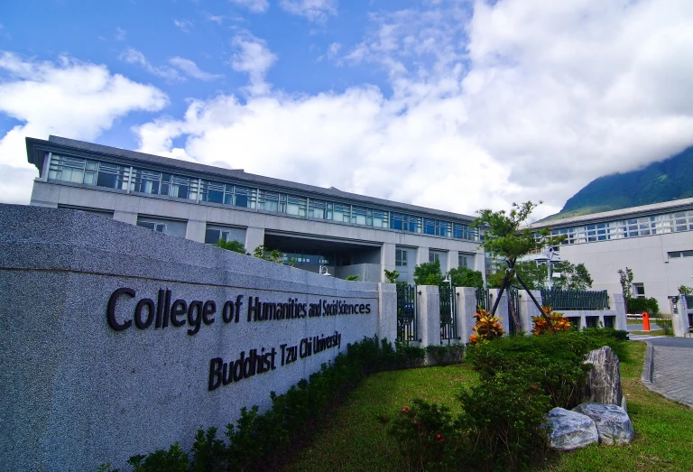

Study at BMD

Coming to Hualien
Applying from outside Taiwan?
Start with the university’s international admissions guidance, then ask BMD about the programme and language of instruction.
International admissionsTalk to the departmentFind your application route
Check eligibility, documents, language requirements, and the schedule for your intake.
Application guidancePlan for fees and support
Read the university’s scholarship criteria, tuition information, and living-cost guidance.
Scholarships & tuitionGet to know life here
Explore language learning and the international student handbook for practical campus information.
Applying to the department
Application routes, dates, and eligibility are published by the university’s admissions service.
Official admissions
Department recruitment resources
Department presentation — Chinese (2026)PPTX · Publisher-listed size: 55.8 MB
PPTXDepartment presentation — English (2026)PPTX · Publisher-listed size: 36.3 MB
PPTXTourism and culinary training — Vietnam cohort (English)PPTX · Publisher-listed size: 9.62 MB
PPTXDepartment admissions resource (PDF)Original filename: 578588702.pdf
PDFQuestions about applying
Where can I see the courses?
Explore the curriculum by admission year and original bilingual documents.
Where do international applicants start?
Use the university’s official admissions website for current routes and requirements.
How can I contact the department?
Email ss62@gms.tcu.edu.tw or call +886-3-857-2677 ext. 31682.